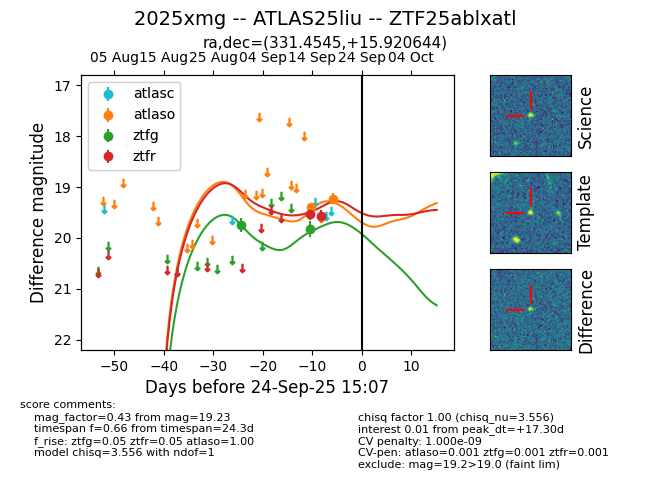
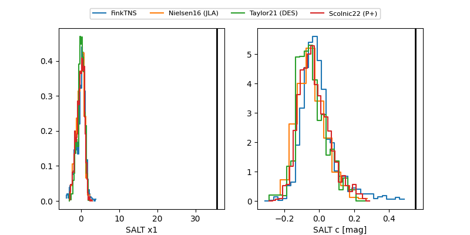

FINK: ZTF25ablxatl
Lasair: ZTF25ablxatl
ALeRCE: ZTF25ablxatl
TNS: 2025xmg
YSE: 2025xmg
ZTF25ablxatl (ztf,fink)
2025xmg (tns,yse)
ATLAS25liu (atlas)
equatorial (ra, dec) = (331.4545,+15.92064)
galactic (l, b) = (74.9498,-31.12154)


last atlaso=19.23, ztfg=19.82, ztfr=19.58
2 atlaso, 2 ztfg, 2 ztfr detections